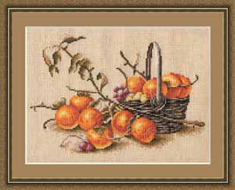
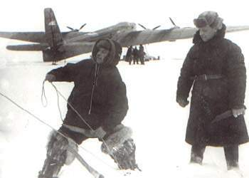
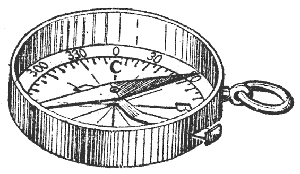
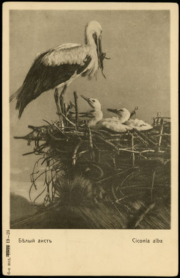
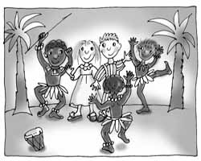
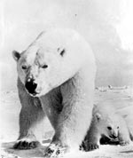
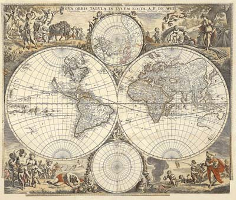

— Сергей Андреевич, что же вы сидите грустный? Съеште хурму!
Сергей Андреевич посмотрел на вазу с фруктами и представил жаркие южные страны. Где какой-нибудь Абдула предлагает загрустившему Ибрагиму горсть клюквы для поднятия настроения. От этой мысли Сергей Андреевич невольно улыбнулся.
— Вот видите, — обрадовалась хозяйка, — хурма волшебный фрукт! Кушайте-кушайте.

Хурма
— Мы поедем искать северный полюс!
Алёшка схватил сестру и одел ей шапку.
— Это же далеко! — испугалась Сашка.
— А мы возьмём с собой много провизии и полярную собаку!
Дети молча посмотрели на собаку Терезу дремавшую в коридоре. Собака Тереза открыла правый глаз, молча посмотрела на детей, закрыла глаз и снова заснула.
— Мы возмём с собой очень много провизии и запасные шапки! — повторил Алёшка.
Во дворе дети взобрались на сугроб и Алёшка гордо воткнул ветку на самую вершину. Как раз в тот момент, когда к калитке подходил дядя Серёжа.
— Дядя Серёжа! Дядя Серёжа! Мы нашли северный полюс!
Сашка слезла с санок и воткнула вторую ветку рядом. Алёшка посмотрел на сестру, затем на ветки и снова закричал.
— Дядя Серёжа! И южный полюс тоже нашли!

Арктика
Сашка повернула компас но стрелка упорно не хотела показывать в другую сторону. Сашка ещё раз повернула — опять то же самое.
— Мама! Синяя показывает на холод, а красная на тепло?
— Да.
— А почему красная показывает на холодильник?
Вскипел электрический чайник, Анна наполнила заварник кипятком и поставила на холодильник.
— Красная стрелка показывает на горячий чай.
Сашка убежала в свою комнату, принесла кружку с недопитым утром чаем и поставила её с другой стороны компаса.
— Да! — и удовлетворённая девочка продолжила обедать.

Компас
— Шестой? — спросил Дмитрий Андреевич глядя на небо.
— Шестой! — кивнул Сергей Андреевич.
— Ну, шестой так шестой! — Дмитрий Андреевич наполнил стаканы.
Кузнечики в саду замолкли и вновь затрещали только после того, как мужики удовлетворённо крякнули, утирая рты рукавами. Старший из братьев открыл блокнот и обвёл кружком шестую галочку. Две галочки на странице остались незачёркнуты.
— Весной их прилетело восемь, — сказал Сергей Андреевич.
— Ну что же, — ответил Дмитрий Андреевич, — если сегодня не увидем больше ни одного аиста, то завтра отправимся их искать и объяснять, что пора лететь на юг.
Сергей Андреевич отложил блокнот и поймал падающий покрасневший кленовый лист.
— Давно пора.
Кузнечики вновь замолчали на минуту.

Аист
Елена не торопилась вставать с постели. Она лишь слегка одёрнула штору, чтобы впустить солнце в комнату.
— Красивый принц отвезёт меня на берег южного моря, — сказала Елена вслух. — Я целыми днями буду гладить бархатный песок золотого цвета. А теплые волны, с барашками из пены, будут ласкать мои загоревшие ноги.
— Горячий южный красавец, — Елена вытянулась в кровати, показывая горячему южному красавцу своё тело, — сделает мне массаж. А другой красавец научит меня кататься на доске по волнам.
За окном прогремела упавшая сосулька разбиваясь о подоконник.
Елена задумалась.
— Они оба будут немыми и моментально исполнят любое моё пожелание! А к вечеру вернётся мой принц и в лучах заходяшего солнца мы будем заниматься с ним страстным сексом. А под утро заснём тут же на пляже, укрывшись пальмовыми листьями.
— Принц, — крикнула Елена в приоткрытую дверь спальни, — ты отвезёшь меня на южное море?
— Ага, хоть сегодня, — ответил с кухни Евгений. — Проснулась? Мы идём на каток?

Эдем
— Ой холодно-холодно, — Евгений безуспешно пытался укутаться полотенцем.
— Терпи казак, атаманом станешь, — усмехнулся Сергей Андреевич.
— Ой холодно, батька, атаману.
— А знаешь как белые медведи депрессию лечат?
— Пивом? — изумился Евгений и потянулся за кружкой.
— Ага, холодным! — ответил Сергей Андреевич и швырнул сына в прорубь.

Белый медведь
Дмитрий Андреевич кнопками прикрепил к стене большую карту мира и ушёл ужинать. Сашка взяла кисточку с красками и принялась с серьёзным видом закрашивать Африку синим цветом.
— В южных районах временами дожди, — сказала Сашка голосом ведущего прогноза погоды.
— На севере тип погоды благоприятный, — девочка обмакнула кисть в жёлтую краску и принялась закрашивать Европу.
— Ой! — кисточка соскочила, и на обоях над картой появилось яркое пятно.
— А на севере севера, тип погоды на-и-бла-го-прия-тнейший, — выговорила Сашка и ушла прятаться.

Карта
Зиновий Липинский
Февраль 2006